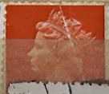
| SOURCE | TITLE| IMAGE MATCH | click to source page |
| vividagallery.com | Italian Michelangiolesca Stamp Male Three Quarter Portrait Red Scarlet 40 Lire 1963 Italy Portable Battery Charger by Vivida Gallery - Vivida Gallery | 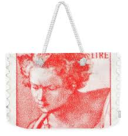 |
| vividagallery.com | Italian Michelangiolesca Stamp Female Profile Orange 5 Lire 1963 Italy Weekender Tote Bag by Vivida Gallery - Vivida Gallery | 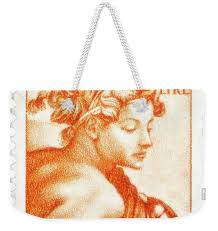 |
| Find Your Stamps Value | Value of posta romana 5l stamps | 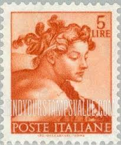 |
| Poppe Stamps | Poppe Stamps: Great Britain, 1993, 1771, Artifacts, Gold , Money, Emperors, Gold - stamps for sale by theme and country | 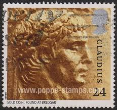 |
| eBay | Michelangelo's Head of David - Proof Printed in Brick Red | eBay | 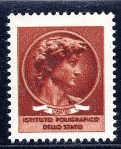 |
| A gold Aureus of Claudius which was found at Bredgar in Kent is pictured on this British postage stamp of 1993. The coin was one of 33 aureii found in July 1957, | 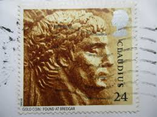 | |
| Collect GB Stamps | GB Folded Decimal Booklets for 1987 : Collect GB Stamps | 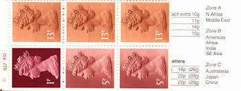 |
| pixels.com | Italian Literary Stamp Gabriele D'Annunzio Portrait Poet 30 Lire 1963 Italy Greeting Card by Vivida Gallery | 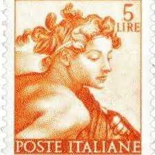 |
| iStock | Michelangelo Sistine Chapel Postage Stamp Stock Photo - Download Image Now - Antique, Art, Arts Culture and Entertainment - iStock | 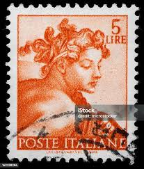 |
| vividagallery.com | Italian Michelangiolesca Stamp Young Male Portrait Red Orange 10 Lire 1963 Italy Toddler T-Shirt by Vivida Gallery - Vivida Gallery | 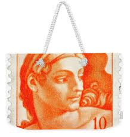 |
| Ripley Auctions | Lot - Antique Victorian low karat gold locket with Roman style intaglio carved cameo carnelian stone. 1 1/4"H x 1/2"W | 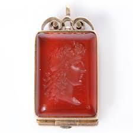 |
| Dreamstime.com | 116 Florence Stamp Stock Photos - Free & Royalty-Free Stock Photos from Dreamstime | 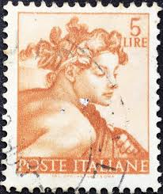 |
| gem.app | Antique victorian carved intaglio - Gem | 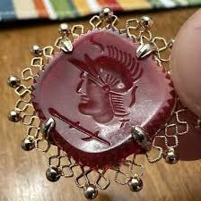 |
| Invaluable.com | Sold at Auction: NEOCLASSICAL GOLD PENDANT WITH CARNELIAN INTAGLIO OF EMEPROR | 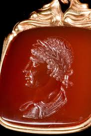 |
| norphil.co.uk | Norvic Philatelics Blog: Roman Britain stamp issue - 18 June 2020 | 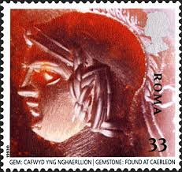 |
| michaelandangeline.com | TRAVEL — A&M | 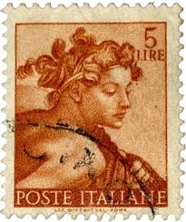 |
| eBay | Dieci 10 Lire for sale | eBay | 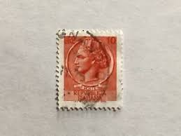 |
| Etsy | Fine 18th Century Antique Carnelian Cameo of the Head of Augustus Caesar - Etsy | 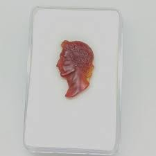 |
| 5 Lira vintage Italian postage stamp | 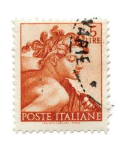 | |
| vividagallery.com | Italian Michelangiolesca Stamp Female Profile Orange 5 Lire 1963 Italy Tapestry by Vivida Gallery - Vivida Gallery | 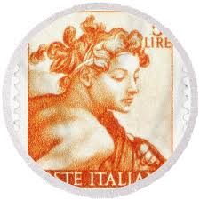 |
| vividagallery.com | Italian Michelangiolesca Stamp Female Profile Orange 5 Lire 1963 Italy Adult Pull-Over Hoodie by Vivida Gallery - Vivida Gallery | 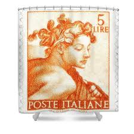 |
| Alamy | Penny postage stamp uk hi-res stock photography and images - Alamy |  |
| Is this a good stamp 5 LIRE POSTE POSTEITALIANE ITALIANE | 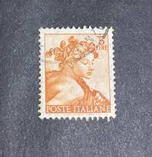 | |
| eBay | Italy Italia 1961, Stamp 827, Celebrities Works Michelangelo New**, MNH Stamp | eBay | 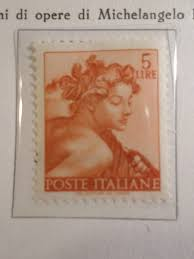 |
| eBay | Carnelian Orange Cufflinks for Men for sale | eBay | 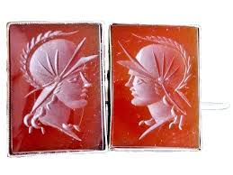 |
| Todocolección | poste italia, 5 lire, michelangiolesca, año 196 - Buy Antique stamps of Italy on todocoleccion | 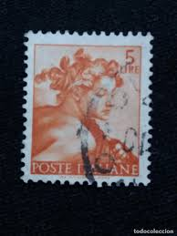 |
| Alamy | Commemorative coin 1993 hi-res stock photography and images - Alamy | 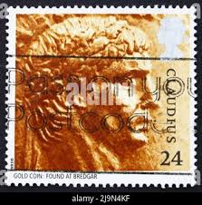 |
| vividagallery.com | Italian Michelangiolesca Stamp Female Profile Orange 5 Lire 1963 Italy Galaxy Case by Vivida Gallery - Vivida Gallery | 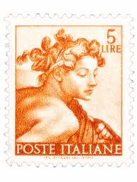 |
| HipStamp | Italy Mi.#1082 | Europe - Italy, General Issue Stamp / HipStamp | 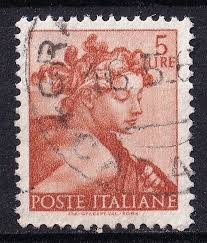 |
| vividagallery.com | Italian Michelangiolesca Stamp Female Profile Orange 5 Lire 1963 Italy Beach Towel by Vivida Gallery - Vivida Gallery | 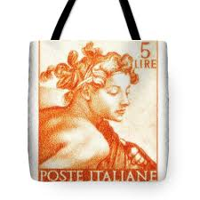 |
| Shutterstock | Australia Circa 1984 Stamp Printed Australia Stock Photo 160128389 | Shutterstock | 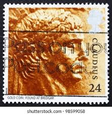 |
| FreeImages | Free italian currency Stock Photos & Pictures | FreeImages | 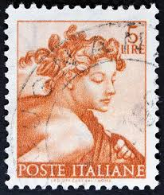 |
| Shutterstock | Banconote Lire: Over 469 Royalty-Free Licensable Stock Photos | Shutterstock | 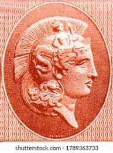 |
| Alamy | Claudius coin hi-res stock photography and images - Alamy | 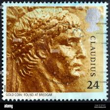 |
| Alamy | Emperor claudius coin hi-res stock photography and images - Alamy | 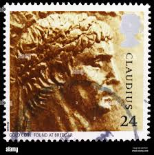 |
| PicClick UK | 1968 POSTE ITALIANE 55 Lire Stamp + Postcard £3.74 - PicClick UK | 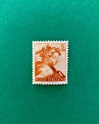 |
| Proantic | Proantic: Hellenistic Carnelian Intaglio, Ruler | 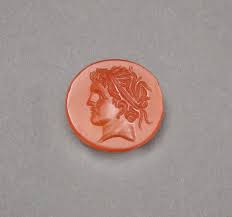 |
| eBay | GB 1993 ROMAN BRITAIN CLAUDIUS 24P POSTAGE STAMP | eBay | 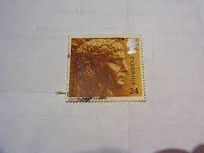 |
| eBay | Cameo Cufflinks for sale | eBay | 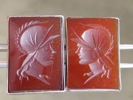 |
| eBay | Las mejores ofertas en Gemelos camafeo | eBay | 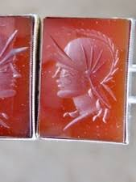 |
| Etsy | Ancient Roman Red Agate Cabochon With King Portrait Intaglio - Etsy | 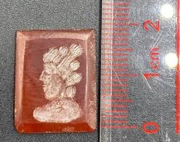 |
| WorthPoint | ROMAN STYLE CARNELIAN INTAGLIO | #127914348 | 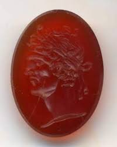 |
| PicClick UK | ROMAN BRITAIN GOLD Coin Collection Westminster. £61.02 - PicClick UK | 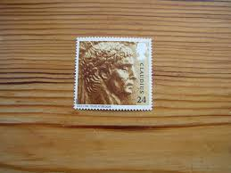 |
| 1stDibs | 1890s Victorian Agate and Yellow Gold Cameo Ring For Sale at 1stDibs | agate cameo, cameo jewelry value | 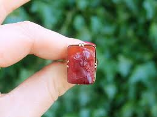 |
| PICRYL | Portrait of a man with a mole on his nose - PICRYL - Public Domain Media Search Engine Public Domain Search | 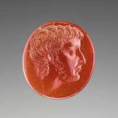 |
| eBay | Bust of Donatello the proof in strip of three specimens | eBay | 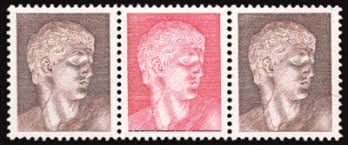 |
| vividagallery.com | Michelangelo Sistine Chapel Fresco Italian Postage Five Lire Stamp 1961 Shower Curtain by Vivida Gallery - Vivida Gallery | 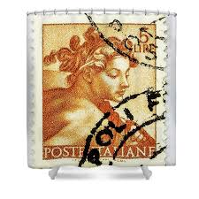 |
| Todocolección | usados italia 1972 - 5º centenario divina comme - Buy Antique stamps of Italy on todocoleccion | 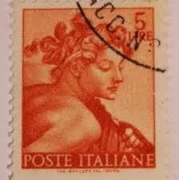 |
| HipStamp | Italy 1961 - U - Scott #814 | Europe - Italy, General Issue Stamp / HipStamp | 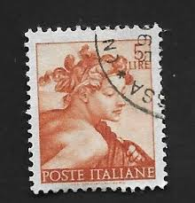 |
| Alamy | Alexander The Great (356-323BC) on 1000 Drachmai 1956 Banknote from Greece Stock Photo - Alamy | 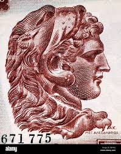 |
| A Roman carnelian intaglio fragment of Apollo Circa 1st Century A.D. | ||
| Bid Inside Auctions | Glyptics - Bertolami Fine Art | |
| vividagallery.com | Michelangelo Ignudo Male Figure Italian Stamp Ten Lire 1961 Renaissance iPhone Case by Vivida Gallery - Vivida Gallery | |
| LiveAuctioneers | Antique Sapphire Intaglio Seal Signet Ring Set With A | |
| vividagallery.com | Michelangelo Sistine Chapel Fresco Italian Postage Five Lire Stamp 1961 Duvet Cover by Vivida Gallery - Vivida Gallery | |
| vividagallery.com | Michelangelo Ignudo Male Figure Italian Stamp Ten Lire 1961 Renaissance Zip Pouch by Vivida Gallery - Vivida Gallery | |
| Bid Inside Auctions | Italian Republic - Ordinary Mail - Filatelia Quattrobajocchi Philatelic Auctions | |
| Kronos Gallery | ATPKO | Kronos Gallery | |
| Invaluable.com | Sold at Auction: A NEOCLASSICAL CARNELIAN INTAGLIO. BUST OF ATHENA PARTHENOS. | |
| Dreamstime.com | Designs Back Head Stock Photos - Free & Royalty-Free Stock Photos from Dreamstime |